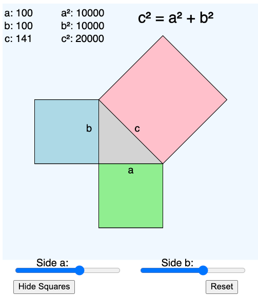

Pythagorean Theorem MicroSim

Run the Pythagorean Theorem MicroSim Edit the MicroSim
Version 1 of Pythagorean Theorem MicroSim
This MicroSim demonstrates the Pythagorean Theorem, one of the most famous theorems in geometry. Using the ChatGPT o1-preview and a good MicroSim template it was easy for us to generate this demo.
Description of the Pythagorean Theorem MicroSim
- Side Length Sliders
- Adjust Length of Side
a(base): Slider - Adjust Length of Side
b(height): Slider
- Adjust Length of Side
- Show Squares Button
- Toggle display of squares on each side: Button
- Calculate Hypotenuse Button
- Computes and displays the length of the hypotenuse
c: Button
- Computes and displays the length of the hypotenuse
-
Reset Button
- Resets side lengths to default values: Button
Prompt
Create a p5.js sketch of showing a visualization of the Pythagorean theorem.
1. Draw a right triangle in the center of the sketch canvas.
2. Create two sliders that adjust the length of side a (base) and height (b)
3. Create a toggle button that shows squares made of up sides a, b and c
4. Show the length of a, b and the length of the hypotenuse C
5. Add a reset button that resets the lengths to the default button.
6. Use the MicroSIm template below for the layout.
7. Place the equation c² = a² + b² as a title in the upper right
8. Display the lengths of a, b and c and their squares in the upper left
Here is the MicroSim template I gave it:
Sample Code
// MicroSim Template with region drawing parameters
// the width of the entire canvas
let canvasWidth = 400;
// The top drawing region above the interactive controls
let drawHeight = 400;
// control region height
let controlHeight = 50;
// The total height of both the drawing region height + the control region height
let canvasHeight = drawHeight + controlHeight;
// margin around the active plotting region
let margin = 25;
// larger text so students in the back of the room can read the labels
let defaultTextSize = 16;
// variables for sliders
let aSlider, bSlider;
// variables for toggle button
let toggleButton;
let showSquares = false;
// variable for reset button
let resetButton;
// default values for a and b
let defaultA = 100;
let defaultB = 100;
// variables for the lengths of sides
let aLength, bLength, cLength;
function setup() {
const canvas = createCanvas(canvasWidth, canvasHeight);
// canvas.parent('canvas-container');
var mainElement = document.querySelector('main');
canvas.parent(mainElement);
textSize(defaultTextSize);
// create sliders
// aSlider adjusts length of side a (base)
// bSlider adjusts length of side b (height)
let sliderLeftMargin = margin;
aSlider = createSlider(50, 130, defaultA, 1); // min, max, default, step
aSlider.position(sliderLeftMargin, drawHeight + 15);
aSlider.size((canvasWidth - 2*margin)/2 - 10);
bSlider = createSlider(50, 132, defaultB, 1);
bSlider.position(sliderLeftMargin + (canvasWidth - 2*margin)/2 + 20, drawHeight + 15);
bSlider.size((canvasWidth - 2*margin)/2 - 10);
// create toggle button
toggleButton = createButton('Show Squares');
toggleButton.position(margin, drawHeight + 40);
toggleButton.mousePressed(toggleSquares);
// create reset button
resetButton = createButton('Reset');
resetButton.position(canvasWidth - margin - 50, drawHeight + 40);
resetButton.mousePressed(resetValues);
}
function draw() {
// make the background drawing region a very light blue
background('white'); // reset background
fill('aliceblue');
noStroke();
rect(0, 0, canvasWidth, drawHeight);
// make the background of the controls area white
fill('white')
rect(0, drawHeight, canvasWidth, controlHeight);
// Show the equation c² = a² + b² at the top center
// note that ² is unicode with a value of : U+00B2
fill('black');
noStroke();
textSize(24); // Increase text size for the title
textAlign(CENTER); // Center the text
text("c² = a² + b²", canvasWidth / 2 + 70, 30);
// get the updated slider values
aLength = aSlider.value();
bLength = bSlider.value();
cLength = sqrt(aLength*aLength + bLength*bLength);
// draw the right triangle in the center of the sketch canvas
// Right angle at (x0, y0)
let x0 = canvasWidth/2 - aLength/2;
let y0 = drawHeight/2 + bLength/2;
let x1 = x0 + aLength;
let y1 = y0;
let x2 = x0;
let y2 = y0 - bLength;
stroke(0);
fill('lightgray');
triangle(x0, y0, x1, y1, x2, y2);
// If showSquares is true, draw squares on sides a, b, and c
if (showSquares) {
// Draw square on side a
fill('lightgreen');
quad(
x0, y0,
x1, y1,
x1, y1 + aLength,
x0, y0 + aLength
);
// Draw square on side b
fill('lightblue');
quad(
x0, y0,
x2, y2,
x2 - bLength, y2,
x0 - bLength, y0
);
// Draw square on side c
fill('pink');
// Calculate the vector along the hypotenuse
let dx = x2 - x1;
let dy = y2 - y1;
// Calculate the unit vector perpendicular to the hypotenuse
let length = sqrt(dx*dx + dy*dy);
let ux = -dy / length;
let uy = dx / length;
// Scale it to the length of the hypotenuse
let px = ux * cLength;
let py = uy * cLength;
// Coordinates of the other two points of the square
let x3 = x2 + px;
let y3 = y2 + py;
let x4 = x1 + px;
let y4 = y1 + py;
// Draw the square on side c
quad(
x1, y1,
x2, y2,
x3, y3,
x4, y4
);
}
// Show the lengths of a, b, and c
fill(0);
noStroke();
textSize(defaultTextSize);
text("a: " + nf(aLength, 0, 0), margin, 20);
text("b: " + nf(bLength, 0, 0), margin, 40);
text("c: " + nf(cLength, 0, 0), margin, 60);
text("a²: " + nf(aLength*aLength, 0, 0), margin+100, 20);
text("b²: " + nf(bLength*bLength, 0, 0), margin+100, 40);
text("c²: " + nf(cLength*cLength, 0, 0), margin+100, 60);
// Label sides on the triangle
// Label side a
let midA_x = (x0 + x1)/2;
let midA_y = y0 + 15;
text("a", midA_x, midA_y);
// Label side b
let midB_x = x0 - 15;
let midB_y = (y0 + y2)/2;
text("b", midB_x, midB_y);
// Label side c
let midC_x = (x1 + x2)/2 + 10;
let midC_y = (y1 + y2)/2;
text("c", midC_x, midC_y);
// Draw labels for sliders
fill(0);
noStroke();
text("Side a:", aSlider.x * 1 + aSlider.width / 2 - 30, aSlider.y - 5);
text("Side b:", bSlider.x * 1 + bSlider.width / 2 - 30, bSlider.y - 5);
}
function toggleSquares() {
showSquares = !showSquares;
if (showSquares) {
toggleButton.html('Hide Squares');
} else {
toggleButton.html('Show Squares');
}
}
function resetValues() {
aSlider.value(defaultA);
bSlider.value(defaultB);
}